FUN AND HUMOR ABOUT LIFE IN A WHEELCHAIR HAS BEEN
COMPILED BY VIOLA PAHL,
A RESIDENT OF WHITE ROCK, BRITISH COLUMBIA.
SHE CONTRACTED POLIO IN 1948, TWENTY-TWO YEARS OF AGE,
AND SEVEN MONTHS' PREGNANT.
VIOLA WAS HOSPITALIZED FOR NINE MONTHS
AND WAS IN AN IRON LUNG FOR A SHORT TIME.
SHE WAS ABLE TO USE CRUTCHES FOR A NUMBER OF YEARS,
USING THE WHEELCHAIR ONLY FOR DISTANCES.
SINCE 2007, VIOLA LIVES IN A SENIORS' RESIDENCE
AND BECAUSE SHE DOES NOT WANT TO RISK FALLING,
SHE USES HER WHEELCHAIR MOST OF THE TIME.
Look at other categories on Viola's website for many more interesting stories.
SOME INTERESTING THINGS ABOUT IRON LUNGS
WILL ALSO BE ON THIS FILE - TOWARDS THE END.
NOTE:
In some of the stories below, Viola refers to herself as "Granny"
and to her husband Fred as "Grandpa". (He is now deceased.)
The reason? Four of Viola's books have the word GRANNY in the titles,
and GRANNY is the name Viola chose to represent her.
MORE "WOW'S"
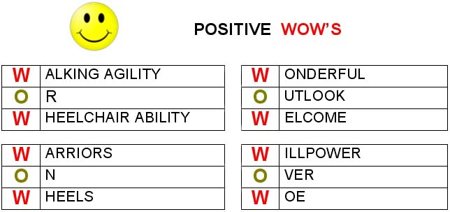
YOU MAKE THE CHOICE!
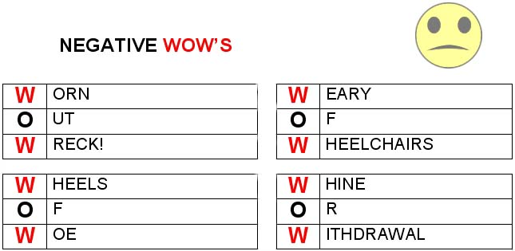
ONCE UPON A TIME... BUT NOW...
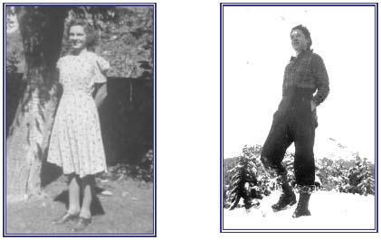
ONCE UPON A TIME...
I could stand tall and straight,
Life for me was first-rate.
I could hike up mountains high,
BUT NOW... I look at them and sigh
For the years of long ago,
When I climbed the heights of snow.
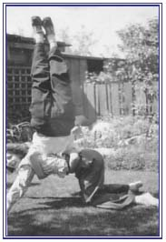
ONCE UPON A TIME... upside down I could perch,
BUT NOW... I walk with dangerous lurch.
So with photo album I sit safely in my wheelchair,
Looking at pictures of myself suspended in mid-air.
When I was thirteen, I won a scholarship to a Swimming Club
which trained the Olympic swimmers and divers. The newspaper took my picture
when I was standing on the diving board with one of the Olympic diving coaches. Unfortunately, time aged the clipping, so it is poor quality.
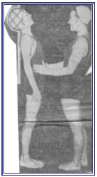
ONCE UPON A TIME... I won a swimming honour
BUT NOW... I'm cautious in a bath tub, or I'm a "goner"!
I'd love to surf, but the only "surfing" I can do
Is on the computer from noon to midnight curfew.
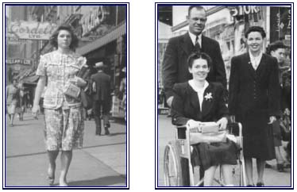
The picture on the left shows me walking briskly down the streets of Vancouver several years before I got polio. The right photo is that of a very kind couple who volunteered to take me on a shopping expedition - my first shopping experience after I came out of the hospital from a nine months' stay - I had to buy a pair of low-heeled shoes which I needed as I was just learning to walk a bit with crutches.
ONCE UPON A TIME... disabilities meant a life of doom,
BUT NOW... I know that life's story need not be gloom -
For it ends "SHE LIVED HAPPILY EVER AFTER".
A life of disability can still be filled with joy and laughter!
ONCE UPON A TIME...,
I WAS WITHOUT HOPE - WITHOUT GOD
BUT NOW... I AM HIS CHILD, FORGIVEN, REDEEMED, AND I LOOK FORWARD TO
"HAPPILY EVER AFTER" IN HEAVEN
GOD GAVE ME
THE FINAL CHAPTER IN MY BOOK OF LIFE ENDS WITH:
"AND I SHALL LIVE HAPPILY EVER AFTER
IN THE HOUSE OF THE LORD!
LIKE A BUTTERFLY RELEASED FROM ITS COCOON,
I, TOO, SHALL BE FREE - FREE AT LAST!
THE PROPHETIC PLAY I WROTE AT AGE
17
At age 17, my imagination soared to grandiose heights. We - the church youth
group - would present a spectacular play which I had written. It was entitled
THE HAVEN OF REST. I wanted the main character of the play to have a
disability. I mused: Blindness? No. Deafness? No.
But if one couldn't cycle, run, jump, or hike up magnificent Grouse Mountain
because you were a paraplegic, that would be a disaster. In the play, the
disabled girl appears to be dying. Her wayward brother stands at her bedside,
and she pleads with him to become a Christian. The story has a happy-ever-after
ending. The disabled girl gets better, and the brother accepts the Lord as his
Saviour. I wanted so desperately to play the part of the helpless girl, but the
youth committee chose an attractive young lady. I didn't begrudge her the role
because she was excellent and a far better choice than I would have been. Fred
Pahl enjoyed playing the "black sheep" in the drama, and he did his part so
well, that in the death-bed scene, he actually cried and many in the audience
shed tears along with him.
At age twenty, I married Fred Pahl, and we went to Bible College to prepare
for missionary service in China. At age twenty-two, I contracted polio when I
was seven months' pregnant. China became a dream of the past, because polio
attacked my lower limbs, leaving me dependent on crutches and wheelchair for
the rest of my life. Instead of going to China, Fred became a Baptist pastor.
The youth at our second church were very active, and they were searching for a
play to present. I rescued my old manuscript The Haven of Rest from its
literary grave, shook off the dust, and gave it to the group to preview. They
loved the play, and when it was presented in various churches, everybody wisely
nodded and said, "Only Mrs. Pahl could write that type of a plot, for she knows
what it is like to be handicapped."
Alas, I mused. "I wrote that play when I was in the best of health, not after
I had polio." Isn't it ironic that the worst disability I envisaged when I was
strong and healthy now became my life's challenge? When I first penned The
Haven of Rest, I had no knowledge of the difficulties paraplegics encountered.
I had never read about nor had I ever met handicapped people at that point in
my life.
Although I now had first-hand experiential insight, I realized no word or line
of the original play needed revision. Amazingly, my penned thoughts about the
frightfulness of being disabled described reality rather than fiction. In the
play, the heroine emotionally described her infirmity.
|
You don't understand! You don't know what it means
to sit back and watch other girls playing basketball, running races, and
swimming when you are always confronted by a burden - being crippled. It is
something which seems to wrap a net around your whole being, and no matter how
hard you try to forget about it, it is always there, looming up like an ominous
shadow. Oh! You can't understand!
|
I was amazed at the words I had written. I couldn't have said it any better
after the fact. Once again, Fred played the part of the "black sheep" much to
the delight of the congregation to see their pastor portraying the opposite of
what he taught. As he went through the death-bed scene, he was gripped by the
reality that he now had a wife who was a paraplegic and who would never regain
the ability to walk normally. The tears were more intense this time, and the
audience was very moved. Our daughter Susan, five years old at the time, began
to sob as she watched the drama. "I know Daddy's only pretending," she wailed,
"but when he cries, it makes me cry, too."
After the initial onset of polio, I spent several weeks in an iron lung. It
was a horrific experience. While I was in the iron lung, I had frightening
dreams which seemed so real. My iron lung travelled through the air and took me
to one of my favourite spots: Grouse Mountain. However, in my wild dream,
no-one would ever open the iron lung and set me free. I was trapped, helpless,
in a prison! And for many years, one of my most frequent dreams was hiking, or
trying to hike, up Grouse Mountain. Alas, I would awaken to the fact that
hiking was not to be for the rest of my life.
In 1940, I had discovered Grouse Mountain when I was age fifteen. In those
days, there were no chair lifts up the mountain, so I hiked up the 4,000 feet.
It was strenuous, but exhilarating. The view from the top of the mountain was a
most inspiring sight. To the west was Vancouver Island and to the east, Mount
Baker in Washington stood above everything else in regal splendor. Far below,
the city of Vancouver sprawled in magnificent beauty. With snow-clad mountain
peaks etching a brilliant blue sky, I experienced a peace, a joy, a kinship
with the Lord that was very special. Up here, I left behind the noisy city, the
multitudes of people, and a home where parents, unfortunately, were shackled
with alcohol. Because of the alcoholism, money was scarce in our home, so I
left high school before graduation and was already working at a clerk's job.
The journey to Grouse Mountain was also an escapism from a stressful job. I
stood tall and straight, strong and muscular, young and filled with dreams and
goals. More important, when I stretched my arms heavenward and had communion
with my Lord and Saviour, I felt free - on top of the world - liberated! The
picture below where I am standing on "top" of the world is old, but the memory
of the moment is as fresh and new as ever.
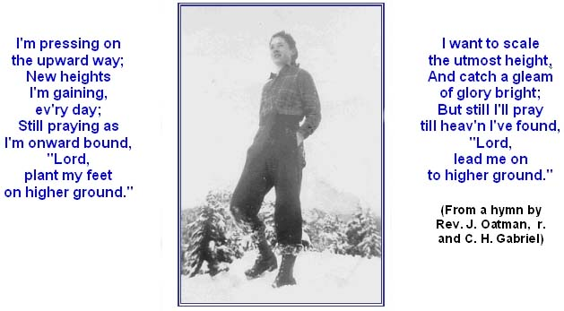
A Few More Pictures and Thoughts
OUR PETS ACCEPT US - WHY NOT YOU?
ACCEPT ME
Accept me as I am - grieving, pained, empty, lonely,
Just love me And allow me to feel
What I must feel. One day I will begin to heal - I know not when.
Don't be afraid of me - It is still me - Struggling to find myself -
outside of this pain. Please! Just be my friend.
As you wish that men would do to you, do so to them." Luke 6:31
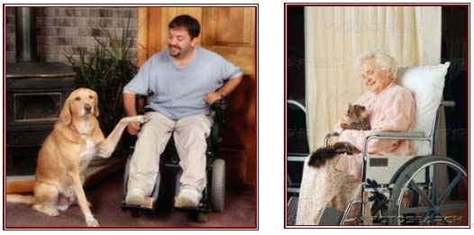
HANDICAPPED?
How handicapped, how bound are we
When Christ was bound on Calvary?
He could not move a hand nor foot,
And He was wracked with anguish, but
He gave Himself to earnest prayer
For those whose weight of sins He bare.
"Father, forgive, they know not what they do."
O child of God, say not,
"I am too handicapped, too bound,
Too busy, and I have not found
A service I can do for Him."
O Shame! Let us, with eyes grown dim,
Look back to Calvary.
Bound helpless there,
The suffering Saviour gave himself to prayer!
(by Martha Snell Nicholson
Martha was bed-ridden and wracked with pain for years.)
WHAT? WHEELCHAIRS FOR CATS AND DOGS?
WELCOME TO HANDICAPPED PETS
THERE ARE WEBSITES ABOUT "HANDICAPPED" CATS AND DOGS, SHOWING VARIOUS TYPES OF "WHEELCHAIRS" TO GET FOR THEM. THE CAPTION ON ONE URL SAYS "WELCOME TO HANDICAPPED PETS"
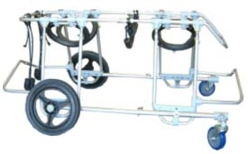
A FOUR-WHEELED QUAD CART
THESE ARE CALLED K-9 CARTS (DO YOU GET IT?)
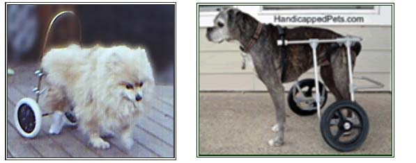
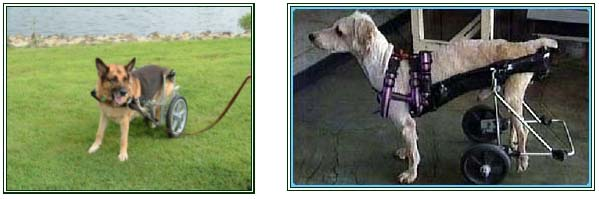
WHO COULD RESIST A POOCH LIKE THIS?
SIX LEGS AND SIX WHEELS - LET'S GO!
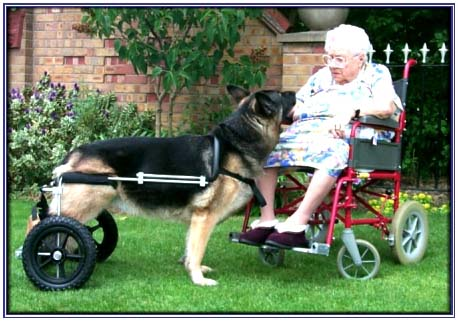
MY POOCH AND I BOTH HAVE WHEELS,
SO WE KNOW HOW THE OTHER ONE FEELS.
WE CAN'T GO FAST, AND WE DON'T GO FAR
UNLESS WE BOTH GET INTO THE CAR.
WE BRING SO MUCH JOY TO EACH OTHER,
WE'RE ALMOST LIKE A SISTER AND BROTHER.
"DOGS PROHIBITED" IS A WARNING SIGN
IF WE WANT TO GO OUT AND DINE.
SO WE STAY AT HOME OUR FOOD TO EAT;
OUR FRIENDSHIP IS REALLY HARD TO BEAT.
ALTHOUGH HANDICAPPED, WE TRY OUR BEST
TO FILL OUR LIVES WITH FUN AND ZEST.
(by VIOLA PAHL)
WHEELCHAIRS! HORRIFIC OR TERRIFIC?
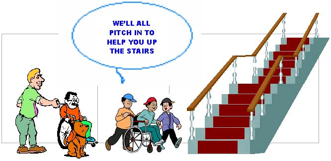
THE ABOVE IS AN EXTRACT FROM THE CHAPTER DEALING WITH
"WHEELCHAIRS"
IN VIOLA PAHL'S EIGHTH BOOK
(CURRENTLY BEING WRITTEN)
YOU'RE GONNA GET A TICKET FOR SPEEDING!
THIS EXCERPT IS ALSO FROM VIOLA'S FORTHCOMING BOOK
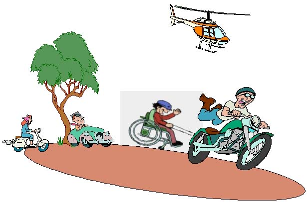
Somehow, there had been a mix-up in communication between a wheelchair-bound young man and the gymnasium where he wanted to go for a workout. One of the instructors had promised to pick up Allan and take him to the gym. When the day arrived, to Allan's dismay, a motorbike instead of a car arrived at the door. "Well," proffered the apologetic driver, "it's too late to get a car for you. How would it be if I chained your wheelchair to the back of my motorbike, and I will pull you to the gym. If I go too fast for you, just honk your horn and motion for me to slow down." The arrangement appeared to be satisfactory, and the odd couple went speeding down the highway. However, the biker, forgetting about the wheelchair, started to accelerate his speed. The young man waved his arms and honked his horn frantically for the biker to slow down. Alas, the noise of the motorbike drowned out the faint beeps of the wheelchair's horn, and because the biker had no mirror attached, he did not see the frenzied arm signals of the terrified paraplegic. A traffic reporter looked at this oddity from his helicopter perch and quickly contacted the highway patrol. "Quick - apprehend the motorbike speeding down the highway. You've gotta stop him."
"Okay - calm down. This happens all the time," came the nonchalant reply. The reporter, who had not noticed the chain joining the wheelchair and motorbike, blurted out in excitement, "But you don't see what I am seeing. There's this wheelchair racing behind the motorbike, waving his arms wildly, and he's… he's trying to get that motorbike to move over and let him pass!"
PERSONALITIES AND ORGANIZATIONS
PRESIDENT F. D. ROOSEVELT'S MEMORIAL
A victim of polio, Roosevelt designed his own wheelchair and used it for more than two decades. But he was almost never photographed in it - fearing Americans would see his disability as a sign of weakness. So when a Memorial was erected in his honor, he was portrayed sitting down with his cloak hiding the wheelchair.
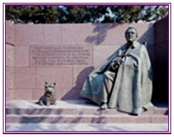
Advocates for the cause of disabled people created quite a stir, as they crusaded for a more realistic image of the President - one where the wheelchair would be visible. Disability groups raised $1.65 million for the new statue, starting with $378.50 from a bake sale in a New Jersey elementary school. The National Park Service agreed to add to it in July 1998 after numerous protests and complaints.
"It was a shame, disgrace and embarrassment to have his wheelchair hidden in this memorial when, in fact, he used it every day of his life," said Alan Reich, president of the National Organization on Disability, which spearheaded the initiative.
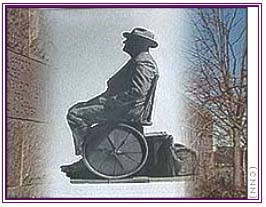
David Roosevelt, an FDR grandson, initially opposed the new statue. He's changed his mind. "I hope that when a young person, who may be in a wheelchair, goes to visit the FDR Memorial he/she will say, "I can do that, too". Family members believe FDR would be pleased that, with the changing times, a person no longer has to hide a handicap in order to succeed. For some, in fact, his condition could prove to be an inspiration.
DAVID ONLEY - A SUCCESS STORY
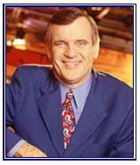
Onley, 57, who worked for CityTv since 1984, has been a vocal champion for the disabled. He himself was partially paralyzed from the neck down at age three by polio. He uses leg braces, a cane, and a motorized wheelchair to get around. He was the first person with a disability to work as a reporter in Ontario. When he started his career, he used leg braces and crutches and later read the news and conducted interviews from a wheelchair.
Unlike FDR, Onley never hid his disability, and television viewers saw his leg braces and watched him conduct interviews from his scooter. His wife, Ruth Ann, is a well-known Christian singer.
Onley has long been involved with church, community and disabled organizations and was appointed to chair the Accessibility Standards Advisory Council, which provides advice as the province seeks to achieve a fully accessible society within the next 18 years. As of July 31, 2007, Onley assumed the prestigious role as the Lieutenant Governor of Ontario. He said his new job - involving touring all over the province - is a great platform from which to promote greater accessibility for other people with physical disabilities. "The places that I can go to have to be accessible," he said in an interview. The irony of the situation is that he will first have to find his way around the 22-step stone staircase at the official entrance to his suite of offices at Queen's Park. Currently, disabled people visiting Queen's Park must enter either through rear entrances or via the legislative cafeteria, and the elevators inside the building, which are some of the oldest in Ontario, are sometimes out of service. Once in the building, the Lieutenant-Governor's suite can be reached by an elevator. Despite decades of talk and advancements in making Ontario more accessible, these kinds of barriers show just how far there still is to go. Onley said:
"It's time ... to realize that a wheelchair
is no longer a symbol of disability.
It is a symbol of freedom for people who cannot walk."
HELP! I NEED TO GO!
There's no way a handicapped person can "run" to the bathroom,
so when he/she gets there - the toilet better be handicapped friendly!
In 1949 Grandpa was called to serve his first church in a rural area. There was a flight of stairs into the church. No problem. Granny didn't weigh much, and Grandpa's arms were strong and sturdy. He just packed Granny up those stairs with great ease. The wheelchair was taken separately (Granny could stand for a few minutes by hanging onto the railing of the staircase.) However, the greatest obstacle was bathroom facilities. Neither the manse nor the church had indoor plumbing. In fact, in that area no-one had indoor plumbing. Fortunately, Granny's physical "plumbing" had not been paralyzed, so it was extremely rare for her to need to visit an "outhouse" when she was away from the manse. It was not comfortable when visiting a parishioner's home to know that the hostess had to take you aside to a bedroom and provide a "potty" for your needs. In the privacy of the manse, a bedpan could be used, and Grandpa never grumbled or complained about the disagreeable task of tending to Granny's needs in this respect. After nearly four years, Grandpa accepted a call to another church, and while the church was not equipped with indoor plumbing, the manse was. It was fantastic to have indoor plumbing and running water. Things could only get better. (And no! positively no! Granny will not go into the arithmetic about how many times Grandpa carried bedpans in those early days.)
From 1949 until 1977, every church Grandpa served had outdoor facilities or flights of stairs to the washrooms. In Alberta, where there can be snow drifts from October to April, the outhouse was not a place for wheelchairs. Flights of stairs were also very formidable. Somehow, Granny coped with these incompatible situations and has lived to see better days. There is no way Granny could signal to Grandpa when he was in the middle of a sermon that she needed to get to the church's outhouse!
Granny urges everyone on a church building committee to have facilities for the handicapped in a separate unit, rather than a handicapped stall in the ladies' room, and another stall in the men's room. With the separate room for either gender to use, an able-bodied spouse can help his/her spouse who may need assistance. In a former membership church, I asked the trustees to please put a handle on the INSIDE of the toilet door so that I could hold the door shut in order to lock it. I waited… and waited… and waited. After several years, I brought up the topic again. This time they complied. But wait a minute - instead of placing the handle on the INSIDE of the toilet cubicle, they placed it on the OUTSIDE! I again had to go to the trustees; this time, however, they rectified the mistake immediately.
I need to have side bars by the toilet, and a higher toilet, if possible. One time when I was going through some lab tests in the hospital, I needed to use the toilet while I was waiting for further tests. I could not get off the low toilet, so I buzzed for the nursing aide. It was obvious that she would strain her back to help me off, so she got a male aide to assist. The two of them, standing on either side of me, were able to stand me up okay so I could then get into my wheelchair. This was in a hospital! How would I have managed in another place, i.e. a department store or a restaurant, for example?
THE UNMENTIONABLE NECESSITY!
When I set up my website, I included a link
TOILETS WITH PIZZAZZ. My son keeps track of the number of "hits" each one of my links gets - and it is quite amusing to see
that this particular links gets the most "hits". I put this topic on my website because bathrooms are a necessity,
INGENIUS INVENTIONS
Well, here's one way to overcome obstacles to the bathroom!
Just incorporate them on your scooter!
NO PROBLEMS WHEN CAMPING?????
(BY THE WAY, IS THE DOOR WIDE ENOUGH FOR A WHEELCHAIR?)
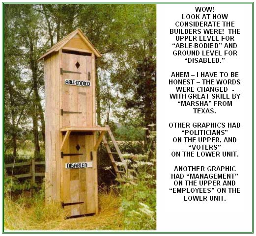
PACIFIC ISLAND "OUTHOUSE"
WHEELCHAIR ACCESSIBLE? YOU GOTTA BE KIDDING!!!!!!!!!
Wow! Aren't you glad you don't have to navigate your wheelchair to this
kind of an outhouse? You'd probably want to wear a life-belt
in case you tipped over! The above picture is from a friend in New Guinea.
But in 1977, our family was in Micronesia to attend my son's wedding.
We couldn't believe that this type of toilet was being used.
Yuk! The Yapese residents had no qualms about swimming in the lagoon, even though it was polluted. However, we were fortunate enough to have an indoor toilet while we were there.
(Note: The "wheelchair accessible" sign was added
to the picture by me - just for a laugh.)
Can you see the "wheelchair accessible" sign on this outhouse? The facility has a million dollar view. It is bear proof, lightning proof, and able to withstand gale force winds. It is located in Glacier National Park, Montana. It sits on top of Swift Current Lookout, above Granite Park Chalet at an elevation of 8,300 feet. To get to the door, you have to climb down a rock ledge. The hike is 8 miles one way and 3500 feet up. Tell me, dear friends, will those in a wheelchair be able to access this facility?
SOMEONE HAD A VERY IRONIC SENSE OF HUMOR
TO NAIL A HANDICAPPED SIGN TO THE OUTHOUSE!
JAPANESE TOILETS
In 1977 I was selected to go with a group of handicapped people, along with a medical doctor and therapists, to visit rehabilitation centers and other places of interest in Japan. It was an exciting three weeks' trip for all of us. My daughter Susan was teaching ESL in Japan, and I bought her way into our tour for one week. I also visited in some of the Japanese homes. Alas! Toilet facilities in many places in Japan are not for handicapped people. As a result, the medical personnel brought along a special commode with a folding stand. When the group went into a restaurant, for example, the commode was brought along and set up in the washroom for our use.
Most of us refrained from drinking coffee, tea, juices or water when a two or three hour bus trip was on the schedule. There were no garages to stop at along the way. Our hotels had "western" type plumbing - what a relief! At the Yahama golf resort, my daughter and I shared a room. The rooms were extremely cold - but ironically, the
TOILET SEAT had a heating element in it - so at least that part of one's anatomy was warm!!!
THE ADVERTISING ABOUT HEATED TOILET SEATS SAYS:
These super comfortable seats have a molded-in 12 volt Thermal Circuit heating
element that heats to a comfortable 20 to 25 degrees above room temperature.
Treat yourself to a heated toilet seat.
It is an unexpected pleasure that the whole family will enjoy everyday.
Try the heated UltraTouch seat and you will never want to sit on another seat again!
A HEATED ULTRATOUCH SEAT MAKES A GREAT GIFT
Economical - uses only 12 watts of electricity.
Only 1/5th the power of a 60 watt light bulb!
Costs only pennies a day to operate. Plug it in and forget it.
Relaxing warmth will spoil you for life!
CAN BE SAFELY PUT IN THE DISHWASHER!
EEEEEEEK!
WOULD I WANT TO USE MY DISHWASHER
AFTER I PUT THE TOILET SEAT IN IT?????
DISABLED CHILD WRITER SELLS 22 MILLION BOOKS!
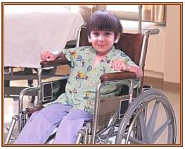
Isn't he an adorable looking little boy? Read on.
Wheelchair-bound Luke Petrowski has been afflicted since birth with a rare degenerative disease. He has confronted his illness by penning heartfelt verse that touches on elements vital to our lives: love, spirituality, courage, grace, and hope. Luke Petrowski's
Hopeweavings books have sold more than 22 million copies. His poetry has been collected in the
Hopeweavings book series, all of which have been
New York Times bestsellers and stand as stirring testaments to the power of faith and love. A sought-after talk-show guest and trusted friend of religious leaders and politicians alike, this home-schooled nine-year-old from small-town Vermont possesses a strength of spirit that has moved and inspired millions.
Yet for all the admiration Luke has won, an unsettling, unspoken sentiment has slowly spread among many people. Though most will scarcely dare to admit it, the consensus is that young Luke's poetry is really, really bad. "I saw Luke on
Oprah a few months ago and was amazed by his remarkable poise and courage," said an Oklahoma homemaker, speaking on condition of anonymity. "But when I read his first
Hopeweavings book, I couldn't deny this feeling that his poetry is actually pretty lousy. I feel horribly guilty saying so, but it's true."
"
Hopeweavings books belong on every bookshelf in America," said Lubbock, TX, realtor Mary Ellen Buford. "Almost all my friends and colleagues have copies of Luke's books, and I highly recommend them to anyone. Luke is a living saint. I don't claim to get everything he writes, but that's how incredible this boy is. He has things to teach us that will take most of us a lifetime to understand."
Another person writes: "His poem about a conversation with an angel moved a lot of us to tears. Watching that frail, brave little boy recite his poetry to a rapt audience is something I won't soon forget."
Even though some consider Luke's writings below average, hey,
who's going to argue with the sales of 22 million!
And I think I'd rather see people reading Luke's writings with his meaningful thoughts
rather than some of the trashy literature on the market.
It will be interesting to see what Luke will be doing ten years from now.
WHEELCHAIR PHILOSOPHY
IF I CAN DO IT, SO CAN YOU
I've been sitting in a wheelchair for more than thirty years,
And though outside I'm happy, inside I hide the tears.
When I think about the folk who gripe of things they can't do,
It brings me to the thought: IF I CAN DO IT, SO CAN YOU.
Of course there's things that I can't do, but a lot more that I can,
So I try to do those things as well as any other man.
Like a little smile, or a word of cheer to help folk on their way,
It doesn't cost a cent to say, "Hi! Have a happy day."
For life is what we make it, and the lucky ones it seems,
Are those who face life as it is; though we, too, have our dreams.
But we don't look for sympathy, so we're ahead by miles,
Although not rich in money, we're millionaires in smiles.
The birds, the sunshine, rain and flowers belong to everyone.
At times we take for granted the things that God has done.
So do with pride what you can do, and you'll find, every day,
No matter how hard pressed you are, with will you'll find a way.
For regardless of what handicap we're saddled with, it's true,
Just stop and realize that your main handicap is YOU.
For you can laugh and you can smile, just the same as me,
So share these gifts with others, and pretty soon you will agree,
That it's great to be a giver, so give… and give again,
Give your love and give your smiles, give anything you can.
For in every cloudy sky, you're sure to find that patch of blue,
And I know it… so come on now, let's show it,
IF I CAN DO IT, SO CAN YOU.
Think it over - you know it's true,
IF I CAN DO IT, SO CAN YOU.
(Written and recorded by Colin James on his album, Save Another Day.
Reprinted by kind permission of Yeldah Music.).
JOY RIDE?
Ben Carpenter of Michigan got the ride of a lifetime when his electric wheelchair became lodged in the grille of a semi-trailer and was accidentally pushed down a highway for several miles at about 50 mph. His father, Donald Carpenter, was incredulous when police called to tell him his 21-year-old son was OK after the wild ride. He said his son had started to cross at an intersection in Paw Paw, about 140 miles west of Detroit, where the truck had stopped for a red light. The light changed to green while Carpenter was still in front of the semi, which started moving forward.
The truck bumped into the side of the wheelchair, which then started turning forward, its handles becoming lodged in the grille. The wild ride had started. Ben was so low that the truck driver couldn't see him when the truck headed out. The wheelchair, with Carpenter strapped in it, ended up being pushed by the truck as it sped down the Red Arrow Highway. Ben Carpenter said while all of this was going on, he seriously considered the possibility that he might not make it before the truck came to a complete halt. Fortunately, he was strapped in with a seat belt. "I was probably thinking that this is going to keep going and not stop anywhere, 50 or 60 miles somewhere. It was pretty scary," he told the Grand Rapids television station. The bizarre sight caught the attention of motorists, many of whom called 911 on their cell phones. A pair of undercover police officers who happened to be driving in the opposite direction at the time saw what was happening. They did a quick U-turn, followed the truck to its business, and informed the disbelieving driver. Ben escaped injury. - not even a scratch, but he was very scared. Ben Carpenter has muscular dystrophy. (See how his wheelchair caught onto the semi-truck's grille below.)
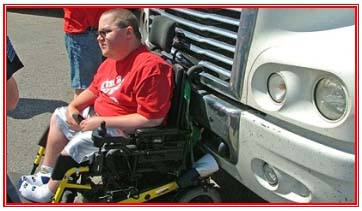
FREE WHEELCHAIR MISSION
If you wish, you can get the Free Wheelchair Mission's weekly letter automatically sent via your e-mail. When I feel tempted to complain, I just have to read some of the heart rending stories the FWM tells about people in third-world countries who finally receive a wheelchair after years and years of crawling, being carried, or staying home-bound. I often "pat" my wheelchair and say "thank you, Lord, I am so privileged to live in a country where I can get so many aids to help my disability. With over 100,000,000 disabled poor throughout the developing world, Free Wheelchair Mission has its work cut out. In 2001, Don Schoendorfer, Ph.D., founded the Free Wheelchair Mission, an international non-profit organization dedicated to providing the transforming gift of mobility to the physically disabled in poor and developing countries. Prior to his work with the Free Wheelchair Mission, Schoendorfer was a biomedical engineer. Currently, Schoendorfer holds more than 55 U.S. Patents related to medical technology. In 2001, Schoendorfer utilized his biomedical engineering background to help solve the problem of immobility in developing nations. For many of these people, medical aid is not available, and adaptive equipment is even more difficult to come by. Schoendorfer's solution was to develop a low-cost, mass-produced wheelchair, made of a resin lawn chair, metal tubing, and bicycle tires, manufactured, and delivered at a cost of less than $50 (US). Schoendorfer remains committed to the Free Wheelchair Mission and met President George W. Bush in July 2005, who commended him on his worthy cause and dedication to helping others. Schoendorfer resides in Santa Ana, Calif., with his wife and three daughters.
Working along with Schoendorfer is Michael Bayer. Bayer, an orthopedic surgeon from Irvine, Calif., earned a chemistry degree at the University of Kansas. An All-American basketball player, Bayer turned down an opportunity to play in a European league and opted instead to follow his other passion - medicine. It was after spending a dozen years as an orthopedic surgeon that Bayer decided to take time off to be with his children and do international charity work. At this juncture, he met up with Don Schoendorfer. Bayer writes the following: "About 10 years ago I retired from my practice of orthopedic surgery to spend time with my children. When I first heard about the free wheelchair idea, I didn't think much of it. I went on a medical mission trip to India to help poor children. It was on this trip that I met an engineer who couldn't wait to try out his first four wheelchairs. God literally threw me into His plan, as I lifted Lotus Blossom from her mat on the mud floor into her new wheelchair. I was moved to tears, as was everyone else. Some years later, when I was back in India, about 300 wheelchairs sat on a hill, and about that many people sat on the grass. I wondered where the disabled people were because only a few people looked disabled. As the speeches ended, I witnessed one of the most moving experiences of my life. As the people in the audience made their way up the hill towards the wheelchairs either by crawling, rolling, dragging themselves, or being carried, I realized everyone in the audience was disabled! Within minutes, three hundred people received a chance for a better life. They were able to regain their dignity, and experience God's love first hand. Many of the recipients had prayed their whole life for a wheelchair, and on this night their prayers were answered."
Look up the Free Wheelchair Mission website on the internet:
freewheelchairmission.org
Links: "ABOUT US" - "MISSION" - "FRIDAY STORY"
There are many "Friday" stories to look at from the Archives column.
BARRIERS TO CONQUER
COMPUTERS
Tim Berners-Lee, the man who invented the World Wide Web once said: "The power of the Web is in its universality. Access by everyone
regardless of disability is an essential aspect." From the very beginning, the question of
how to make the Internet's wealth of information and experiences available to everyone who wants it has been a concern. Unfortunately we still haven't been able to make the Web truly accessible to everyone. There are still barriers that prevent between 35 to 60% of people from fully using the Internet. We have made our physical world more accessible for disabled persons. The next logical step is accessibility for disabled persons in the electronic world. So while wheelchair ramps are common place, it is time now to build "wheelchair ramps" to the Internet!" Technology is essential because it can facilitate the daily lives of many people with disabilities - both at home and at work.
CURBS, DOORS, STAIRS, THOUGHTLESS PEOPLE
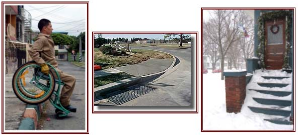
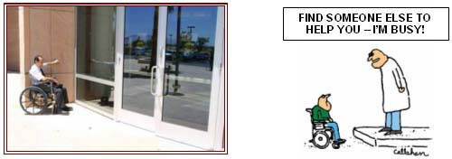
SNOW AND PARKING SPACES

When Viola lived in Edmonton, this is how the front yard of her house looked
on the FIRST DAY OF SPRING - March 21. She had her husband erect a sign
to place in the snow drift: with the words -
SPRING? BAH!
They used the back entrance to get to the garage.
SNOWMAN: Can I help you?
FREDDIE: Yeh - Susie and I were invited here for lunch.
But there's no way we can get into that house.
SNOWMAN: Hmm - I see why - you're both in wheelchairs!
SUSIE: Boy, I'll be glad when the snow thaws.
SNOWMAN: (frightened) No, no, no! If the snow melts,
I won't be around any more!
I'M NOT DREAMING OF A WHITE CHRISTMAS!
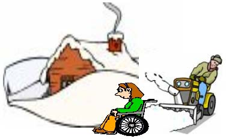
WILL THERE BE HANDICAPPED PARKING SPACES WHERE I AM GOING? !
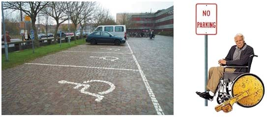
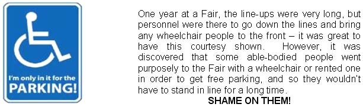
SPECIALTY WHEEL CHAIRS!
The Landeez all-terrain chair goes where no wheelchair has gone before, gliding gracefully over sand, gravel, snow and soft soil. The Landeez all-terrain wheelchair features the timeless quality of stainless-steel construction. With the Landeez, you will be able to get out and enjoy Mother Nature! Outdoor activities with friends and family provide a sense of well being which can lead to improved health and better results in rehabilitation. Can't you just see yourself on the beach soaking up sun? And when the sun gets too hot, just have someone roll you right down into the water. For road trips and air travel, the Landeez all-terrain wheelchair disassembles easily without tools to fit
into your luggage or car trunk. The entire chair weighs only 37 pounds.
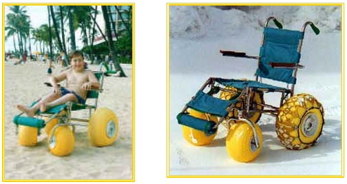
THE TANK WHEELCHAIR
The Tank Chair is a customized wheelchair that can overcome streams, mud, snow, sand, and gravel, and can also climb up and down stairs.
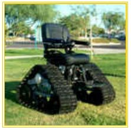
GREAT WHEELCHAIRS FOR CHURCH
WHEN I GO TO CHURCH - THESE ARE THE KINDS OF WHEELCHAIRS I NEED!
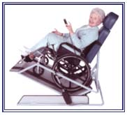
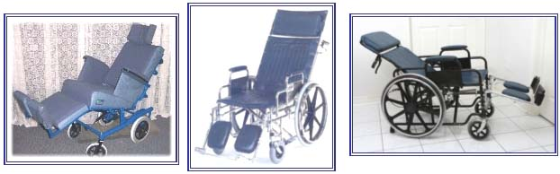
Now I sit me down to sleep, The speaker's dull, the subject's deep.
If he should stop before I wake, Give me a poke for goodness sake!
The bore was describing his travels in the Swiss Alps and droned on, and on, and on. At one point he pontificated, "There I stood on the mountainside with the deep abyss yawning in front of me." "Excuse me," interjected a bored listener, "but was that abyss yawning
before you got there?"
Sleeping? Oh, no - just resting my eyes!
Because the speaker's words tranquilize.
Please sympathize - do not moralize
That snoozing in church will scandalize.
LECTURER: One who talks in other people's sleep.
It is not a satisfying experience to speak over the radio -
you never know when your audience is turning you off!
He was a marvelous preacher.
After every sermon, there was a great awakening.
SOS has a variety of meanings:
Same Old Speech
Same Old Sermon
Same Old Speech-Maker
When I reminded my preacher husband of his S O S sermons,
he'd smile at me and remind me of my S O S dinners -
Same Old Stew!
IRON LUNGS
MEMORIES OF THE IRON LUNG
Viola Pahl was 22 years of age and seven months' pregnant when she contracted polio. She spent a short time in the iron lung, and in this section, she relates some of the emotional trauma she had with this aspect of her disability.
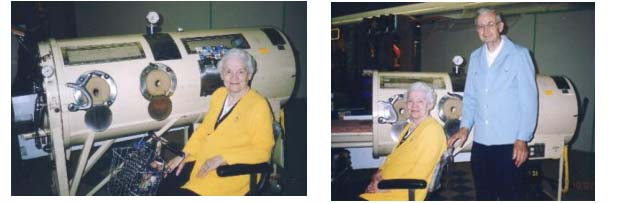
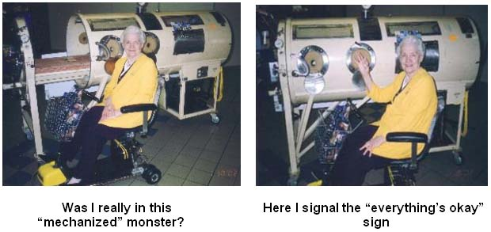
In 2002, I spoke at a Rotary Club to thank them for the many good things they are doing in preventing polio in third world countries. I suggested to them that they place an iron lung in the local mall to gain more interest in their program. This they did, and I went to the mall to see the iron lung. It was the first time I had seen an iron lung since 1948 when I was in one for two weeks. A sudden surge of emotion went through me, and the tears started to flow. With difficulty, I constrained myself as there were many people standing around. As they looked at the lung, I heard some say, "What is this for?" Polio tends to be a forgotten ailment nowadays, and people do not even recognize an iron lung. I feel so sorry for people who have had to be in an iron lung for long periods of time. I did not enjoy my sojourn in the lung one bit, and it was a welcome day when I was finally taken out of it.
The first book I wrote was "Through the Iron Lung". The foreword was written by Dr. M.L. Leuschner, Editor of Promotional Literature, the North American Baptist General Conference. Here is what he wrote:
|
We are attracted to some lives by the scintillating glory of their spiritual victories. They have conquered their adversities, and we are inspired by their example. They have found grace sufficient for every ordeal, and we would like to know the secret of their invincible lives. Charles H. Spurgeon said: "Some people owe the grandeur of their lives to their tremendous difficulties." Strange as that paradox sounds, we, too, are eager to belong to their noble company. Many long, fearful shadows have fallen across the pathway of Viola A. Pahl. The remarkable thing about her life is that she never lingered long in the shadows. She always emerged triumphantly. Even when stricken seriously with polio and fighting for her life in her new "mechanized home," her life story is that of going victoriously "Through the Iron Lung." In her home life and ministry as a pastor's wife, as well as in her editorial activities as contributor of poems, articles, and stories to Christian publications, she has been as radiant as a rainbow that shines after the storm. The author of this captivating testimonial regarding her handicap has found the joy of living through days of shadow and of sunshine in the Cross of Christ her Lord.
|
As you know, I was seven months' pregnant when I contracted polio. I was in isolation hospital for six weeks, so I could not have visitors. When the staff thought I was going to die, they allowed my husband to see me. There I was - all alone - no family, no friends, no-one to be with me. But wait - we have a joke in our family regarding my stay in the iron lung. I was not alone after all. I say to my son, "You are a wonderful son. When no-one else was with me during my stay in the iron lung, you were with me day and night." And he even kicked around in my tummy to let me know he was still alive in spite of it all! When I narrate our little family joke to friends, it always brings a chuckle.
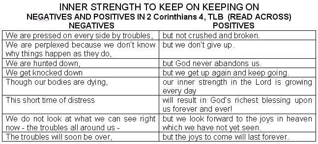
CHEER UP - IT COULD BE WORSE!
WE MAY BE HELPLESS, BUT WE ARE NEVER HOPELESS!
1 CORINTHIANS 13:13 (TLB) - THERE ARE THREE THINGS THAT REMAIN -
FAITH, HOPE, AND LOVE
HELPLESS, but not HOPELESS:
Romans 15:13: Now the God of hope fill you with all joy and peace in believing, that ye may abound in HOPE through the power of the Holy Ghost.
Remember, if you have HOPE, you can COPE - not MOPE!
HOPE is what we want so nothing can us daunt
We will never need to MOPE When God offers us HOPE to COPE!
As someone has said: God's might changed my plight
Excerpts from Romans 5:
We rejoice in hope of the glory of God; we glory in tribulations,
knowing that tribulation works patience,
and patience - experience; and experience - HOPE.
And HOPE maketh not ashamed; because the love of God is shed abroad in our hearts.
IT TAKES JUST A CHANGE OF ONE LETTER OR ONE SPACE TO GO
FROM NEGATIVE TO POSITIVE! (READ ACROSS)
SOME SAY GOD IS NOWHERE, BUT WE CAN SAY HE IS NOW HERE!
O LORD, WHY ARE YOU STANDING ALOOF AND FAR AWAY?
WHY DO YOU HIDE WHEN I NEED YOU THE MOST? (PSALM 10:1)
THE PSALMIST DESPAIRED - HE FELT THAT GOD WAS NOWHERE,
BUT LET US NEVER FORGET THAT IN ALL OF OUR CIRCUMSTANCES,
GOD IS NOW HERE!
ACCEPTANCE OR REJECTION?
NO ROOM FOR THE DISABLED
FOR THOSE OF US WHO HAVE DEDICATED CARE-GIVERS,
LET US THANK GOD FOR THEM
AND COUNT OUR BLESSINGS AS THEY CARE FOR US.
I THANK MY FAMILY FROM THE DEPTHS OF MY HEART
FOR THE LOVE AND CARE THEY HAVE GIVEN TO ME! I AM BLESSED INDEED!
THE FOLLOWING STORY IS SO SAD.
A story is told about a soldier who was finally coming home after having fought in Vietnam. He called his parents from San Francisco. "Mom and Dad, I'm coming home, but I've got a favour to ask. I have a friend I'd like to bring with me."
"Sure," they replied, "we'd love to meet him."
"There's something you should know," the son continued. "He was hurt pretty badly in the fighting. He stepped on a land mine and lost an arm and a leg. He has nowhere else to go, and I want him to come live with us."
"I'm sorry to hear that, son. Maybe we can help him find somewhere to live."
"No, Mom and Dad, I want him to live with us."
"Son," said the father, "you don't know what you're asking. Someone with such a handicap would be a terrible burden on us. We have our own lives to live, and we can't let something like this interfere with our lives. I think you should just come home and forget about this guy. He'll find a way to live on his own."
At that point, the son hung up the phone. The parents heard nothing more from him. A few days later, however, they received a call from the San Francisco police. Their son had died after falling from a building, they were told. The police believed it was suicide. The grief-stricken parents flew to San Francisco and were taken to the city morgue to identify the body of their son. They recognized him, but to their horror they also discovered something they didn't know - their son had only one arm and one leg!
THE PAST CANNOT BE UNDONE
Why, O God, why were we so blind? We didn't show love, and we weren't kind.
We have only ourselves to blame. We bow our heads in heart-breaking shame.
Please, dear Lord, forgive our despicable deed. May we come closer to you and heed
Your word which includes all mankind -
Though they be disabled, You don't leave them behind.
Our dearest son - he will never know That we would have said "yes" and not "no"
Had we known he was the one disabled. But he died feeling he was rejected.
To everyone everywhere, we loudly proclaim -
Be kind to those who are limping and lame.
Love them, hug them, help them along,
Accept them, encourage them, do them no wrong.
(by Viola Pahl)
EMPLOYMENT
Yes, yes, yes! Employment is possible for wheelchair users. Throughout the years, Granny worked at various jobs, and if the distance from the car to the work area was not too far, Granny used her crutches. Granny did mostly secretarial work throughout the 1950s and 1960s. In the 1970s, Granny worked in the correspondence office of the Premier of the Province of Alberta. In the 1980s, Granny was able to get a position as a relief instructor in Business Administration at a College.
SPORTS
Granny was an avid swimmer in her youth. She won a scholarship to the club where Olympic swimmers trained. After having polio, her swimming skill remained (however, her endurance was more limited). Imagine yourself by a pool where you see a fully-clothed man wheeling a lady in her bathing suit to the pool's edge. He helps her dismount to the pool's edge, and then pushes her in. You gasp with consternation, but to your amazement, the lady turns over on her back and floats like a cork, and then she swims a length of the pool, even though her legs are dragging without too much movement. Well, you've just witnessed an oft-repeated scene from Granny and Grandpa's life. Grandpa is like oil - he just doesn't mix well with water, so he rarely ever goes in a pool.
MARRIAGE
TOO HAVE AND TOO OLD
The bride, white of hair, is stooped over her cane
Her faltering footsteps need guiding.
While down the church aisle, with wan toothless smile,
The groom in a wheelchair comes riding.
And who is this elderly couple you ask?
You'll find, when you've closely explored it,
That here is that rare, most conservative pair,
Who waited 'til they could afford it.
(by Richard Armour)
WHY WAIT UNTIL YOU'RE OLD???
NEWSPAPER ARTICLE
ARTICLE FROM THE NOW NEWSPAPER NOVEMBER 2003 ABOUT VIOLA PAHL,
(Written by Chris Stewart)
POLIO SURVIVOR
AGE OF ACCOMPLISHMENT
"Even if the doctor doesn't give you a year, if he's hesitant to suggest even a month, make one brave push and see what can be accomplished in a week." This is the advice of polio survivor Viola Pahl, whose ambitious lifestyle dwarfs that of successful executives and accomplished athletes. This White Rock author, whose seventh book, Granny's Love/Hate Affair with the Ex Generation, is just hot off the press, finds her days so filled with challenges she can't find time to be idle. Replete with humour, her most recent book is full of success stories of plain, ordinary, elderly people, who, rather than retiring from productivity, have maximized their senior years to pursue goals seldom achieved by their younger peers.
Such as 89-year-old Norman Vaughan who, with a fused ankle, climbed a 3,140-metre Antarctica mountain, named in his honour, and 91-year-old amputee, Order of Canada and honourary doctorate recipient Jean Buchan, who is returning to Bansi, northern India, to oversee the construction of a medical clinic where she has served as a missionary-nurse for nearly 60 years. Among others included in Pahl's latest book is Surrey's 81-year-old Lenore Marvin, back from Brisbane, Australia, after competing against athletes from 79 countries and winning gold medals in the cross-country race, the 5,000-metre walk and the 5,000-, 1,500- and 800-metre runs.
This prolific writer has highlighted the achievements of many successful seniors who have displayed tremendous willpower, including Hawaiian steel guitarist, David Ka'ili, who performed for presidents and celebrities until age 100; Grandma Moses, with some 2,000 paintings to her credit prior to her passing at age 101; Bessie Delaney, a best-selling author at age 102, who became New York's second black woman licensed as a dentist and her sister Sarah (who lived to age 109) the state's first black woman to teach domestic science in the area's high schools.
"Life is an ascent, not a descent," Pahl chides. "Plan to retire not from something but to something."
Pahl's books include heaps of advice and recipes for happy longevity, including the opinion of 87-year-old US Senator Theodore Francis Green who claims, "Most people say that as you get old, you have to give things up. I say you get old because you give things up." Pahl's own advice is worth heeding: "Although the future may not be yours to enjoy, you have today. Live it to the fullest!"
Her guidelines for enjoying retirement are simple: "Learn to be satisfied; keep on liking people; meet adversity valiantly; keep active with hobbies; maintain a good sense of humour; don't be on the lookout for ill-health; explore opportunities for volunteer work; be sure your activities are divinely ordered - not self-imposed; make the present hour pleasant and cheerful; the past can't be recalled; share your joy in the Lord with others."
POLIO SURVIVOR REFUSED TO GIVE UP
Pahl, grandmother to four grandchildren and popularly known as "Granny" believes negativism can be overcome by a positive attitude. She explains that an optimist views a partially filled glass of water as "half full" while a pessimist sees it as "half empty". "It's all a matter of perspective," she insists. Events in "Granny's" life which would have devastated most women haven't robbed her of her sunny attitude. Instead, this attractive lady with beautifully coifed white hair, exudes a radiant smile, contagious humour, warm friendliness and displays a genuine interest in everyone she meets.
Contracting polio in August 1948, while seven months pregnant, Pahl spent several weeks in an iron lung before giving birth to a healthy son against extraordinary odds. A former athlete, swimmer and cyclist, now relegated to a wheelchair and crutches, this vibrant guitarist and youth leader refused to give up. "There are destructive memories and constructive ones," she says. "Older people who choose to dwell on the blighting hurtfulness of incidents rather than learning from them, bankrupt their souls."
Finally, removed from the iron lung, Pahl lay motionless, 24 hours a day, in a tiny, make-shift Calgary isolation hospital with flimsy partitions between the wards, before being transferred on a stretcher in an unheated baggage car to Edmonton. When, finally, the conductor, noticing her flimsy cot was being tossed to and fro in the frigid train, ordered her moved, she was dragged on her mattress through the various cars to a heated compartment where she was treated to a welcome hamburger following weeks of bland food. After the difficult birth of her son, she lay flat on her back for another three months until Christmas when she was granted a five-day reprieve. On Feb. 24, following six months of bedrest, a wheelchair was ordered, enabling her to be wheeled out of her ward. Two months later she learned of the doctor's long-awaited decision.
"Mrs. Pahl can now try to stand!" he announced. Provided with crutches, with a stiff upper lip this courageous young mother undertook the grueling regime of accomplishing what the specialists had deemed impossible. With her legs behaving like a combination of rubber and lead weights, she painstakingly managed a mere eight steps before flopping onto the bed exhausted.
Finally discharged on May 13 and reunited with her six-month-old son Gerhart, Pahl and her husband Fred traveled four hours by train to Hilda, Alberta, 55 miles from Medicine Hat where Fred Pahl had been appointed pastor of the Baptist church;. But how was Pahl, confined to a wheelchair and crutches, going to cope with the role of a minister's wife, plus mothering an infant and trying to handle household duties without running water, electricity, plumbing or telephone while familiarizing herself with an unfriendly, rural Prairie winter? There were often unexpected events such as the day husband Fred forgot to replenish the woodbox before he left for his day's duties and little Gerhart fell down the basement stairs while descending to gather firewood. Pahl, trapped in her wheelchair, was unable to help him but fortunately he managed to crawl back up the stairs and reach the main floor unscathed.
Anxious to live a normal family life, the Pahls adopted a daughter Susan when Gerhart was two years of age. At age 31, Pahl, who had held a clerical position at the Jericho Beach Naval Station during the Second World War, decided to re-enter the work force. "Have you ever noticed," she asks, "how the sitting and horizontal hours of our activities are the same for either handicapped or able-bodied people? We lie down to sleep approximately eight hours daily. We sit to eat, ride in a car, use machines such as computers, typewriters, telephones, etc. We sit while attending church, concerts, and watching television, and in today's high-tech world many jobs, such as office roles, are carried out in sitting positions."
Raised in an East Vancouver home where alcohol abuse resulted in chaos and tragedy, Pahl longed for the day she could be out on her own. She and her husband Fred had planned to serve as overseas missionaries, but this plan had to be laid aside when polio struck. But although their dream of foreign missionary service was thwarted, they have experienced a similar career in Canada where Fred has pastored a number of churches, served as a school principal, and ministered as Chaplain of White Rock's Evergreen Baptist Home.
PAHL IS TRULY INSPIRING
A gifted speaker, Pahl kept 240 diners spellbound recently as she recounted highlights of the war years, including some of her own experiences when she worked as a civil servant in the Intelligence section of the Canadian Navy. She related the moving story of John Plummer who, in 1972, set off the napalm bomb striking the Vietnamese village of Trang Bang where so many, including nine-year-old Kim Phuc, were severely burned. Plummer, devastated by the Pulitzer prize-winning photo of Kim tearing off her scorched clothes and running down the road, never got over it. He reported, "Her photograph was indelibly burned into my heart and soul and was to haunt me for many, many years. I was wracked with guilt knowing I was responsible for her injuries because I had sent the bombs into her village," he said. He wanted to tell Kim how sorry he was but found he couldn't return to Trang Bang to do so.
In June 1996, Plummer, learning Kim, now living in Toronto, would be honoured at Washington's Vietnamese Veterans' Memorial service, was determined to see her. He stood motionless, listening in disbelief as Kim, addressing the hushed crowd, said, "Sometimes I thought I could not live, but God saved my life and my faith and hope. If I could talk face to face with the pilot who dropped the bomb, I would tell him I've forgiven him." Little did she know that Plummer, his eyes filled with tears, stood among the listening crowd. "How could she possibly forgive him for the suffering he had caused her?" he questioned. Kim, learning he was there, rearranged her schedule to enjoy a two-hour visit with him, and to his complete surprise, as he approached, she held out her arms to him in a warm embrace. Completely shaken by her loving gesture, all he could say was, "I'm so sorry. I'm so sorry," over and over again. "She is the closest thing to a saint I have ever known," said Plummer. "She got down on her knees and prayed for me in the hotel lobby that day."
To meet Viola Pahl is to get to know a very special lady with keen insight - never at a loss for a smile or a chuckle - one who inspires seniors to rid themselves of grudges and misunderstandings which negate their joy, and free themselves to put their very best effort into making every day special!